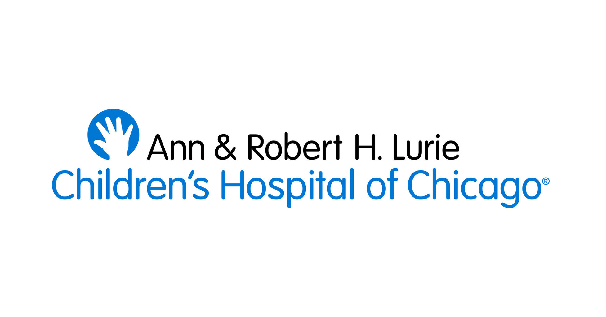

I am a certified animal care technician (ALAT) at Northwestern University in a zebrafish facility. In August of 2020, I obtained a certificate of completion in the Zebrafish Husbandry Education Course.

As a volunteer student researcher at Lurie Children's Hospital of Chicago, I have obtained technical skills through Dr. Jacek Topczewski such as PCR, gel electrophoresis, fin-clipping, and flourescent microscopy.
Beginning in September of 2020, I will work towards earning a certificate of completion in full stack web development at Northwestern University.